Desde 2015, atendemos a região de Mauá e algumas cidades vizinhas, prestando serviços para pessoas físicas e jurídicas.
Devido ao nosso empenho em prestar serviços de qualidade, somos parceiros de algumas seguradoras que atendem nossa região, bem como de algumas empresas sediadas no município.
Buscamos agilidade em nosso atendimento, sem deixar de lado a qualidade e o interesse na resolução dos problemas de nossos clientes. Trabalhamos com preços justos e oferecemos os principais meios e formas de pagamentos. Dispomos de emissões de notas fiscais e realizamos faturamentos de notas para empresas.
/O QUE OS CLIENTES DIZEM DE NÓS?
Atribuições:
"Rapidez"
"Qualidade"
"Excelência"
"Preço justo"
"Cordialidade"
"Empatia"
"Gratidão"
LER NA ÍNTEGRA
Nossa meta continua a mesma. Desejamos que todos os nossos clientes tenham experiências iguais ou melhores que as citadas a ponto de criarmos um longo histórico de amizade e parceria.
Você sabia?
Além de cadastro nacional de pessoas jurídicas (CNPJ)
o CHAVEIRO BURGOS também
tem registro no Instituto Nacional da Propriedade Industrial (INPI),
o que o torna marca registrada.
CONHEÇA ALGUNS DOS SERVIÇOS QUE PRESTAMOS
Abertura residencial
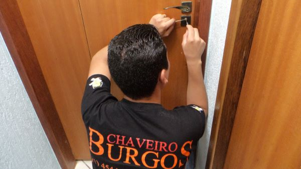Mesmo em situações em que a fechadura encontra-se quebrada é importantíssimo que se realize a abertura correta evitando transtornos futuros como fechadura, porta e batentes estourados. Por isso utilizamos ferramentas adequadas e muita técnica, garantindo a integridade da fechadura e da porta. Em casos onde a fechadura não está de fato quebrada, como no caso de uma simples perda da chave ou esquecimento, é possível utilizar as chaves anteriores, após a abertura por nós realizada.
Abertura veicular
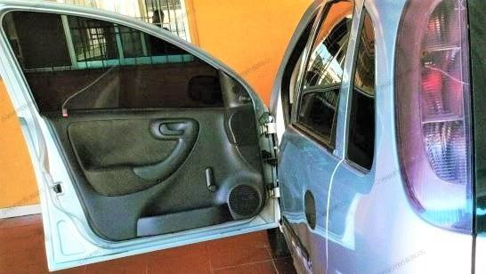É muito comum que na correria do dia a dia enquanto resolvemos alguns afazeres tranquemos a chave dentro do veículo, quer no porta malas, ignição ou banco onde até conseguimos ver mas não podemos pegar. Nestas situações é comum tentar dar um jeitinho, mas frequentemente essas tentativas são frustradas e o resultado são portas, pinturas e pinos ou maçanetas danificadas. Assim como no caso de aberturas residenciais utilizamos ferramentas adequadas e muita técnica, incluindo ferramenta de proteção contra riscos na pintura.
Instalação de fechadura digital de embutir
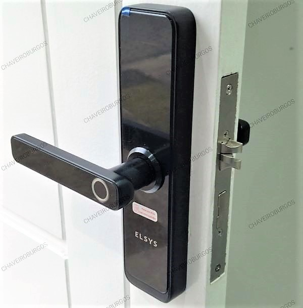Em plena era tecnológica onde tudo se conecta e oferece mais praticidade, as fechaduras digitais se destacam das fechaduras mecânicas atuais, alguns modelos de fechaduras digitais oferecem aberturas através de biometria, senha, tag e aplicativo - como é o caso da ilustrada, além de dispor de chave mecânica multi-ponto ou pantográfica, os sistemas mais seguros da atualidade. Sem contar a praticidade de abrir ou travar pelo lado de dentro apenas com o giro da maçaneta. Devido a toda essa praticidade é normal trocar a fechadura comum por uma digital, porém não é fácil encontrar profissionais aptos a fazer essa adaptação sem danificar a porta ou a nova fechadura. Saímos na frente nesse segmento, como podem ver, esta instalação foi realizada por nós.
Instalação de fechadura digital de sobrepor
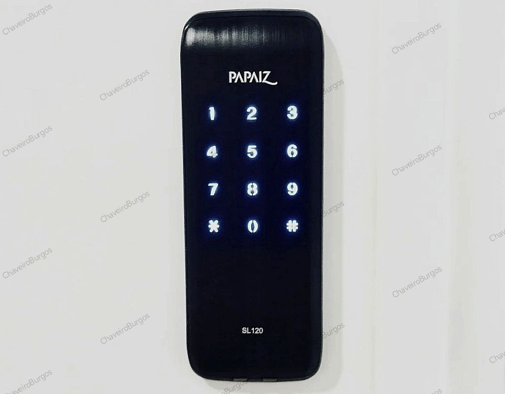Igualmente inovadora e tecnológica, as fechaduras digitais de sobrepor ganham o gosto da clientela por sua praticidade e baixo custo de aquisição. Com proposta de ser uma fechadura adicional/secundária, elas não possuem maçaneta nem chaves, porém dependendo do modelo além da senha que é o mais básico, podem usar também tecnologias como tag e biometria, além de ativar o fechamento ao encostar a porta. Por dentro a abertura pode ser realizada pressionando o botão trava/destrava ou, por girar o botão mecânico. Assim como a digital de embutir é muito difícil encontrar profissionais qualificados para a instalação, pois muitos dizem que é apenas um furo e acabam danificando a porta ou na menor das hipóteses deixando a fechadura muito alta o que possibilita que terceiros vejam a senha ser digitada, ou deixando-a fora de prumo/torta. Assim como visto na imagem, tomamos todos os cuidados para que a instalação fique no mínimo perfeita.
Instalação de trava auxíliar tetra
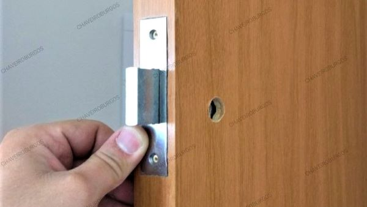Assim como a fechadura digital de sobrepor, a proposta da trava auxiliar tetra é de ser um fechadura adicional para reforçar a segurança da porta, sendo possível adicionar uma ou duas fechaduras a critério do cliente, no caso da instalação do par é possível utilizar uma única chave para abrir ambas as fechaduras cima/baixo, porém para isso, é necessário a compra do par, para que venham com segredos unificados/igualados. Além de ter um sistema mais seguro comparado às tradicionais yales/simples ela impossibilita a violação por arrombamento do cilindro, visto que esse não tem apoio para a quebra. Além disso, é uma fechadura de baixo custo aquisitivo o que a torna uma ótima escolha para o reforço da segurança. Sua instalação precisa de cuidados especiais visto a fragilidade das portas atuais e de seu acabamento laminado, tomamos todos os cuidados possíveis para que o resultado seja como o da imagem acima de uma instalação por nós realizada.
Cópias de chaves
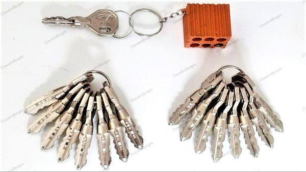As cópias ou duplicações de chaves, são serviços básicos que todo profissional chaveiro realiza, porém cópias de chaves em sí não proporcionam um bom lucro, por conta disso o mercado oferece materiais de baixo custo o que altera automaticamente a qualidade e duração da cópia, além disso as máquinas duplicadoras desregulam ou gastam suas fresas o que altera as cavidades da cópia em relação a chave matriz, fazendo com que os clientes reclamem de chaves quebradas sem esforço ou que retornem várias vezes para reparar/refazer sua cópia. Não visamos o lucro e sim a satisfação do cliente, por isso embora mais caro, o material que utilizamos para as nossas cópias são os melhores do mercado e mantemos nossa máquina sempre regulada para que as cópias saiam com perfeição.
Cópia yale auto
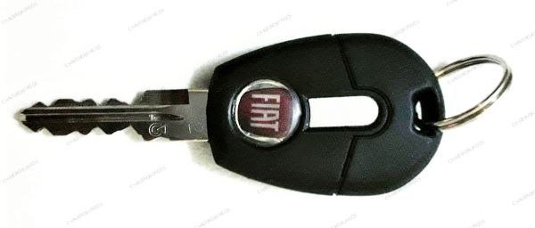Cópias yale auto simples/codificadas quebradas. Assim como as cópias yale/simples ou tetras, as cópias de chaves automotivas devem igualmente ser realizadas com um bom material, evitando assim trincas/quebras a curto prazo. A cópia acima foi realizada por nós, a partir de uma chave codificada quebrada, pode-se notar sua similaridade com a chave original.
Unificação de segredos
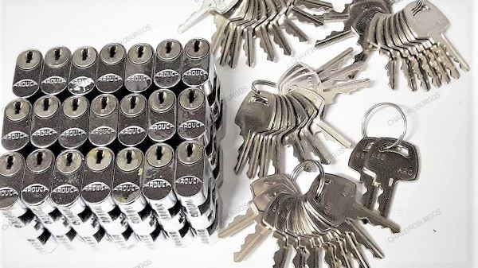A unificação de segredos oferece praticidade e economia ao fazer/utilizar cópias de chaves. Vale ressaltar que só é possível realizar este serviço em cilindros da mesma marca e modelo. Neste caso, realizamos a unificação de 21 cilindros/miolos. Isso significa que anteriormente cada cilindro tinha sua própria chave, caso os usuários quisessem abrir determinada porta deveriam ter a chave específica devidamente identificada para não ficar escolhendo a chave na hora de abrir. Além de nada prático, sairia também muito caro fazer tantas cópias. Após unificados uma única chave abre e fecha todas as fechaduras correspondentes aos cilindros. Todas as cópias da imagem são da mesma chave para atender a quantidade de usuários.
Cofecção de chaves/troca de segredos
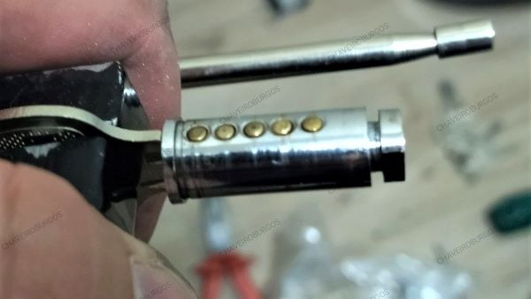A confecção de chaves é uma excelente forma de economizar quando se perde todas as chaves da fechadura, não sendo necessário em si comprar um novo cilindro ou fechadura. Utilizando o mesmo cilindro é possível fazer novas chaves.
A troca de segredos por outro lado é o inverso da unificação, mas com benefícios parecidos ao da confecção, inclusive é possível fazer uma confecção já com troca de segredos sem valor adicional. Cada cilindro traz pinos segredos, que podem ser reposicionados formando um novo segredo ou espécie de senha que pode ser lido por assim dizer pela chave nova enquanto a chave antiga não funciona mais no cilindro. Este tipo de serviço é bem comum em casas de aluguel e apartamentos, sempre que um inquilino muda se faz necessário uma troca das chaves a baixo custo, também é utilizado para evitar que pessoas que causaram problemas retornem a residência ou às suas dependências.
Cópias de controles para portão automático
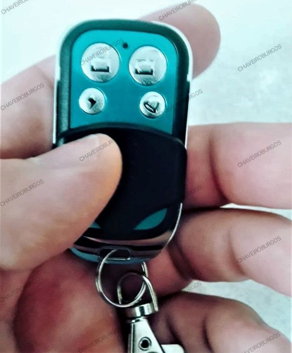A duplicação de controles remotos para portões automáticos é uma ótima opção comparado aos tradicionais controles programados direto na placa do motor. Ao copiar/clonar um ou mais controles por outro que já funciona, evita-se o contato com a placa, garantindo que não haja desprogramação acidental de tempo, abertura ou fechamento do portão, além disso os controles copiam o mesmo código do controle matriz/existente, o que significa que não ocupará uma nova posição na memória da placa. Dessa forma é possível copiar quantos controles forem necessários, com total segurança e muitas vantagens.
Instalação de olho mágico
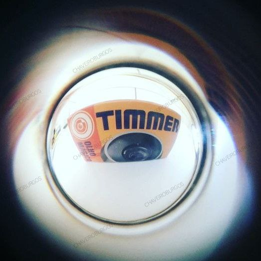Embora construído com tecnologia simples, basicamente lentes e metal, o olho mágico é um ótimo dispositivo de segurança pois permite ver quem está batendo a porta/tocando a campainha. Assim só abrimos a porta quando temos certeza que é seguro fazer isso. A instalação não é tão simples quanto parece, embora seja realmente apenas um furo, este furo deve ser medido para que fique centralizado e ajustado a altura dos usuários, visto que no mesmo ambiente haverá pessoas com estaturas distintas. O furo também pode sair fora de ângulo devido a maioria das portas modernas serem ocas. A broca pode desviar caso encontre diferenças de resistência na madeira. E o mais comum, a broca pode estourar a porta ao atravessá-la, e visto o acabamento ser milimetricamente pequeno a lasca ou furo errado não será coberto, por isso é necessário o uso de técnica para não acontecer qualquer incidência do tipo.
Estes são apenas alguns dos serviços que prestamos.
Fique a vontade para nos contatar a qualquer momento através dos botões do menu. Estamos ansiosos para lhe atender.
O artigo a seguir tem por objetivo transmitir algumas dicas de segurança, após observações proporcionadas pelo contato constante com vítimas de roubos.
DICAS DE SEGURANÇA
Por Fábio Burgos - 13 de maio de 2023.
Cópias deverão ser atribuídas ao autor:
devburgos.github.io/chaveiroburgos cc by-nc-nd.
Antes das dicas deixa eu passar um dado interessante sobre o assunto segurança. A fim de coletar esse dado fiz um quiz em minha rede social, nele contei que estava atualizando meu site e perguntei se havia interesse em acrescentar uma sessão sobre dicas de segurança, para minha surpresa todos os votos foram favoráveis. Porém de 77 pessoas que visualizaram apenas 7 votaram. O que isso significa? Significa que mais de 90% das pessoas que visualizaram não se interessam pelo assunto, e são esses que na maioria das vezes são escolhidos como vítimas, pois a falsa sensação de segurança os deixam sempre de guarda baixa e à mercê de criminosos de oportunidade.
Isso mesmo, os gatunos saem à procura de oportunidades, e quase sempre as vítimas são aqueles que por distração ou excesso de confiança deixam as portas abertas por assim dizer. Diferente do que muitos pensam, os criminosos não agem apenas por impulso, na verdade eles também planejam com antecedência seus passos, por isso se eles estão há um passo a frente devemos avançar mais um, ou seja, pensar de forma a dificultar ao máximo sua atuação.
Podemos dizer que há três tipos de criminosos que atuam como gatunos: 1- os arrombadores, que são os mais comuns; estes dispõe de duas a três ferramentas muito básicas como chave de fenda, alicate de pressão ou alavanca, e buscam circunstâncias favoráveis como mencionamos, ou seja, algo que possam estourar sem ser notados e que não percam tempo. 2 - os que tomam de assalto; estes não têm a habilidade dos arrombadores nem a habilidade dos que citaremos a seguir, por isso precisam tomar algo a força, por exemplo, não conseguiriam abrir uma casa para tirar coisas de valor, ou ligar um carro parado, por isso roubam pessoas na rua para tomar objetos de valor, ou para pegar um carro já com a chave. 3 - Os mais habilidosos/profissionais; infelizmente são pessoas com grande experiência mas que usam sua habilidade para atos criminosos e até se especializam para o delito. Por exemplo, podem estudar com antecedência como destravar, desligar o alarme e ligar um carro em apenas 30 segundos. Eles usam desde o básico até o mais sofisticado método e é quase impossível escapar se for escolhido como vítima.
Há boatos que itens valiosos como um carro, é tomado da vítima a troco de R$ 200,00 a R$ 300,00 enquanto celulares a muito menos. Definitivamente, eles não têm dó da vítima que paga muito mais numa prestação do que eles ganham no furto. Por isso vale muito a pena dificultar ao máximo para que não sejamos um alvo.
Resumindo: As residências na maior parte das vezes são alvos de arrombadores, que não costumam ter habilidade com ferramentas profissionais como michas. Na rua, parados ou em movimento, podemos ser vítimas dos que tomam de assalto, ou seja, a mão armada, embora reagir nunca seja opção neste caso é sempre melhor entregar, sua vida vale mais. Já os veículos parados, em especial carros modernos, que utilizam sistemas de imobilizadores e chaves codificadas são levados por criminosos altamente habilidosos, especializados no que fazem, e em muitos casos atendendo alguma encomenda do veículo em específico.
Agora que entende mais sobre o assunto vamos às dicas. Irei apresentar por tema para uma leitura mais rápida e específica, mas sugiro que leia na íntegra se possível.
- Nunca poste nas redes sociais que vai ou que está viajando
- Não deixe chave no vaso ou embaixo do tapete, isso já é clichê e alguém pode ver você fazer isso. Seria o mesmo que deixar a casa aberta.
- Se a porta for do tipo que contém vidro, após fechar retire a chave.
- Instale mais de uma fechadura na porta e dê preferência a trava auxiliar tetra da marca Stam, modelo mais difícil para michar. Veja o modelo de uma trava auxiliar acima para não confundir. A marca vai do 8 à 80 em segundos, ao passo que a trava auxiliar tetra é a mais segura, todas as demais de cilindro são as mais frágeis e mais procuradas por arrombadores.
- Se a sua porta for direto para a rua, instale um sensor de presença para que acenda uma lâmpada sempre que alguém passar na frente, isso aumenta sua conta de luz mas inibe oportunistas que não gostam de ser vistos.
- Instale também uma câmera de monitoramento por wi-fi. É possível encontrar modelos bem acessíveis, porém ela deve ficar alta ou dentro de um suporte de grade para que não a danifique.
- No portão social nunca utilize fechaduras com cilindros expostos com mais de um centímetro. O cilindro deve ser rente a lata do portão.
- Em portões de grade com cadeados pequenos, utilize um suporte para cadeados para evitar sua quebra.
- Se utilizar cadeados expostos, dê preferência a cadeados acima de 40mm da marca Papaiz se for de chaves simples, esses cadeados oferecem dificuldades até para profissionais na hora de abrir. Outros modelos de cadeados, ainda mais resistentes, são os cadeados tetras e os cadeados multipontos.
- No portão da garagem de rolar, tenha os três tipos de travas, fechadura central, travas laterais e cadeado de solo, todos com sistema tetra.
- Em portões de garagem automáticos, tenha travas laterais elétricas ou utilize cadeado na extremidade do portão deixada para isso pelo serralheiro. No braço entre o portão e o motor, utilize cadeado ao invés da presilha ou parafuso de fábrica.
- Não deixe o portão aberto mostrando o que há na garagem ou casa por muito tempo.
- Se seu portão for de grades, procure fechar a visão adicionando placas metálicas.
- Não abra o portão para estranhos em nenhuma hipótese.
- Instale grades de ferro nas janelas, mesmo que já tenham grades de alumínio, o que é meramente estético.
- Caso seu muro seja baixo, aumente alguns metros ou instale grades altas com lanças nas pontas, também poderá nesse caso instalar uma cerca elétrica ou cerca perfurante. Porém veja se a altura corresponde às normas de segurança, para não machucar pedestres.
- Crie cães soltos no quintal, porém os cães devem ser do tipo que intimidam, de grande porte que sejam bravos com estranhos, de nada adianta um pet fofinho que só quer brincar. Caso tenha crianças avalie bem essa possibilidade ou que raça vai escolher pois existem raças que podem atacar até mesmo os donos.
Residência
Carros
- Após adquirir seu veículo, contrate de imediato um seguro, antes mesmo de se preocupar em abastecê-lo ou tirá-lo da garagem pela primeira vez. Algumas seguradoras fazem todos os trâmites ainda na concessionária.
- Embora a primeira dica seja contratar um seguro, deixe para usá-lo em último caso. Ou seja, não confie só nele e tome outras medidas, o seguro serve para encontrar o veículo, ser ressarcido em casos em que não é possível encontrá-lo ou em casos de acidentes. Porém em alguns casos as seguradoras levam até 3 meses para ressarcir seus segurados, nesse caso se o veículo for financiado você continuará pagando as parcelas sem o veículo. Além disso, dependendo de quanto do veículo já foi pago, mesmo ressarcido, receberá valores equivalentes à quitação, ou seja, sairá no zero a zero, sendo que precisará financiar outro. Sem contar em todo o gasto com documentação e emplacamento do novo veículo.
- Não deixe fora da garagem por muito tempo sem estar observando.
- Não deixe o carro passar a noite na rua, a questão não é se ele vai ser levado mas quando?
- Olhe a rua por meio de uma câmera para ver se é seguro sair.
- Se prepare antes de sair da garagem, após colocar o carro para fora, não volte para pegar objetos, bolsa etc. Saia imediatamente.
- Ao chegar observe pessoas suspeitas, se preciso dê uma volta no quarteirão, se observar as mesmas atitudes suspeitas dirija para outro local seguro e espere um bom tempo passar. Ligue para alguém para o acompanhar na entrada se preciso, ou acione o guarda da rua ou polícia informando o fato.
- Se o portão for manual procure instalar um portão automático para não perder tempo abrindo e fechando, essa é a hora mais crítica em que poderá ter o carro tomado.
- Instale sistemas de alarmes do tipo corta corrente, combustível, freio.
- Utilize travas carneiro que prenda o volante e o freio, embora menos eficazes podem se tornar um empecilho para um gatuno que não esperava se deparar com mais uma trava.
- Instale trava de câmbio em especial da marca Mul-T-Lock a trava mais segura da categoria dificilmente violada.
- Estacione em locais de movimento em especial em frente a comércios, nunca em lugares ermos e escuros.
- Não deixe objetos de valor expostos, instale insulfilmes nos vidros das janelas e utilize protetor solar no parabrisas ao deixar estacionado, isso fecha a visão e protege contra arrombadores que veem algo dentro do veículo.
- Não deixe pessoas dentro do carro enquanto vai rapidinho comprar algo, esses podem se tornar vítimas de assaltantes tendo ou não as chaves.
- Quando não encontrar locais seguros, deixe o carro em um estacionamento mesmo que tenha que andar bastante para realizar suas necessidades. Reserve por mês um valor específico para este gasto, assim como faz com o combustível.
- Ao dirigir em especial a noite evite ficar parado em farol, faça rotas que sabe que não tem tantos radares e semáforos. Se estiver trafegando e o farol fechar ainda distante, reduza a velocidade e vá aos poucos se aproximando, assim não ficará parado por muito tempo no farol e se precisar arrancar, o carro já está em movimento.
- Ainda na situação noturna em que trafega sozinho, não espere pessoas se aproximarem para pedir dinheiro, vender algo, pedir informação. Tenha como atitude suspeita, verifique se é seguro e passe aos poucos aquele farol, evite acidentes mas não se torne uma presa.
- Sempre olhe os retrovisores, se perceber que está sendo seguido, dirija a um local seguro e movimentado de preferência se conhecer bem a região, dirija até um posto policial e busque ajuda. Enquanto trafega fique atendo para ver se avista viaturas que podem estar fazendo rondas.
- Infelizmente algumas situações não podem ser evitadas, caso seja vítima de assalto nunca reaja. Coopere ao máximo para que o criminoso o deixe rapidamente, para que fique livre dele. Acione imediatamente a polícia e o seguro. Em alguns casos, quando os criminosos não utilizam bloqueadores de sinal, o veículo roubado é abandonado para ver se tem rastreador, o que permite ainda ser encontrado. Obs: a polícia deve ser acionada primeiro pois já poderá sair em diligências ainda recebendo as informações que passa a central. O seguro por outro lado retardaria o processo fazendo muitos questionamentos para só depois acionar a polícia, algo que você poderia ter feito antes, porém após acionar a polícia deverá acionar também o seguro para que possa cooperar com a polícia fornecendo a localização do veículo caso o seu plano inclua este serviço.
Motos
- Os cuidados com as motos são parecidos aos cuidados com carros, veja acima todas as dicas que se aplicam, além delas temos outras.
- Sempre trave o guidão, embora não ofereça quase nada de segurança, o guidão travado evita que gatunos saiam simplesmente empurrando, fingindo que está sem combustível ou bateria.
- Utilize trava de disco própria para esse fim, essas travas trazem sistemas diferenciados que não podem ser quebrados com michas tradicionais. Existem até mesmo travas com alarmes embutidos onde qualquer movimento do guidão o aciona.
- A trava de guidão e de disco juntas, já são suficientes para frustrar um gatuno, em geral eles quebram a trava de guidão e estouram o miolo de ignição mas não tem micha para abrir a trava de disco o que pode lhes surpreender e até mesmo lhes derrubar da moto.
- Ao travar a moto com a trava de disco, gire a roda até a trava encostar na pinça de freio por baixo para evitar que caia em caso de esquecimento.
- Além da trava de disco, poderá utilizar cadeados próprios para motos, estes cadeados muito comuns utilizam aço que é dificilmente rompido até por ferramentas como os alicates ou tesouras corta vergalhões, sem contar que seu sistema em geral é multiponto e dificilmente seria aberto por um simples arrombador. Os cadeados trazem ainda outra vantagem, a visibilidade, ou seja dentre tantas motos estacionadas, a sua pode até ser a mais potente e mais cara, mas tem um cadeado, os oportunistas irão tentar levar uma mais barata que seja mais FÁCIL de arrombar.
- Crie o hábito de travar sua moto em qualquer lugar, inclusive dentro de sua garagem, até porque uma hora você pode esquecer de travar o portão, ou até mesmo pode acontecer de outra pessoa abrir sem querer, ou de o controle entrar em curto e abrir o portão sozinho o que já aconteceu comigo, mas sua moto vai estar travada.
Com o tempo é possível que outras dicas venham a ser incluídas aqui, por isso revise periodicamente a data de atualização do artigo acima.
Espero que esse artigo tenha lhe ajudado de alguma forma, ficarei grato se puder nos contar como foi ajudado. Clique aqui para escrever.
Quero fazer um donativo
MAIS SOBRE NÓS
O Chaveiro Burgos, surgiu em meio a uma grande crise econômica e também financeira do seu fundador. Ainda trabalhando para outro chaveiro de renome na época, o futuro criador do Chaveiro Burgos, sentiu a necessidade de cooperar ainda mais com a empresa, pois percebeu que ali não havia profissionais qualificados em cofres e que havia uma demanda no segmento, por isso pediu permissão para se ausentar enquanto realizaria o curso de uma semana. O curso incluía três módulos: chaveiro, abertura de veículos nacionais e importados e abertura e manutenção de cofres.
Após seu retorno na semana seguinte, o profissional realizou um serviço muito lucrativo para a empresa onde já utilizou parte de seu aprendizado no curso. Porém para sua surpresa foi demitido sem explicações recebendo seu salário, direitos trabalhistas e uma boa carta de apresentação. Mesmo saindo de cabeça erguida por saber que havia dado o seu melhor e agido honestamente em todos os sentidos, a demissão foi um duro golpe. Porém utilizou o pouco que recebeu para investir em suas primeiras ferramentas.
Começando por aberturas, em pouco tempo já estava realizando outros serviços básicos. Não demorou muito e se regularizou como microempreendedor individual. Além disso, investiu muito tempo em divulgações presenciais e pela internet de formas gratuitas e inovadoras. Após fazer divulgações bem chamativas e criando um site na época, foi praticamente copiado pela grande empresa que o havia demitido, em todos os sentidos: site, fotos, nome de busca no google etc.
Não demorou muito para fazer grandes parcerias com empresas locais e de outros estados, incluindo seguradores que atendem a região. Além disso, entrou em processo de patenteamento do nome do chaveiro, pois havia rumores de que em determinada região havia outro chaveiro com mesmo nome, visto ganhar o registro legal, ninguém mais poderia utilizar o nome CHAVEIRO BURGOS sem seu consentimento, uma vez que se tornou marca registrada. Tudo isso por não querer problemas com clientes vinculados ao seu nome.
Fomos os primeiros a instalar fechaduras digitais na cidade e ainda hoje somos os mais indicados pelo resultado final. Continuamos nos reinventando e nos renovando a cada ano, sempre pensando em como atender melhor nossos clientes e isso é o que nos identifica em meio a tantos concorrentes.